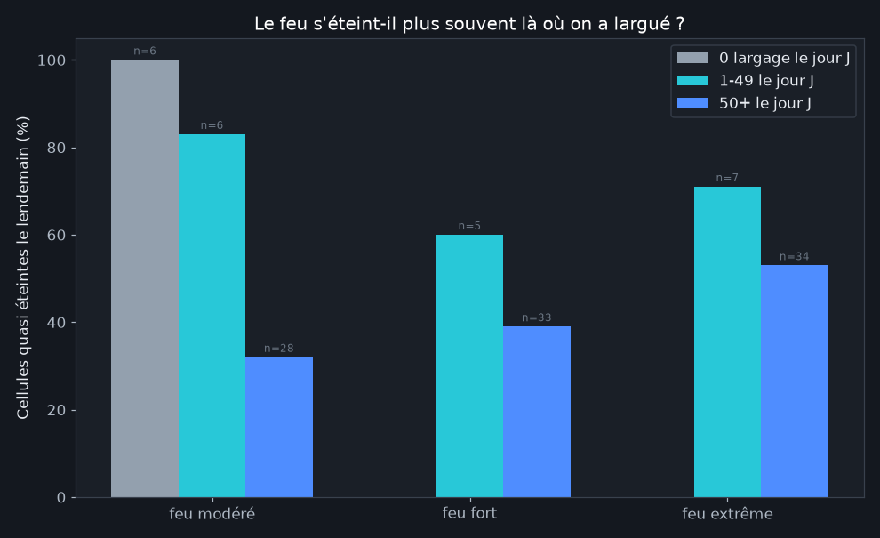
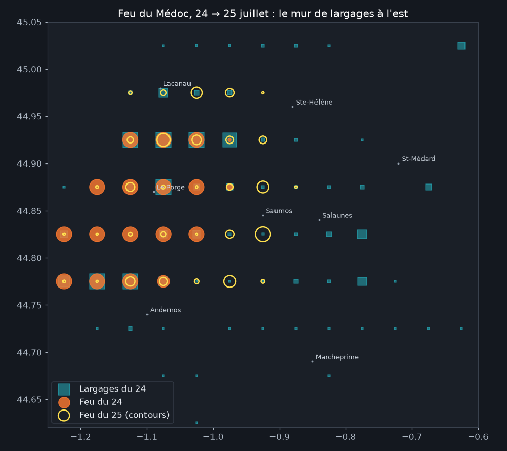
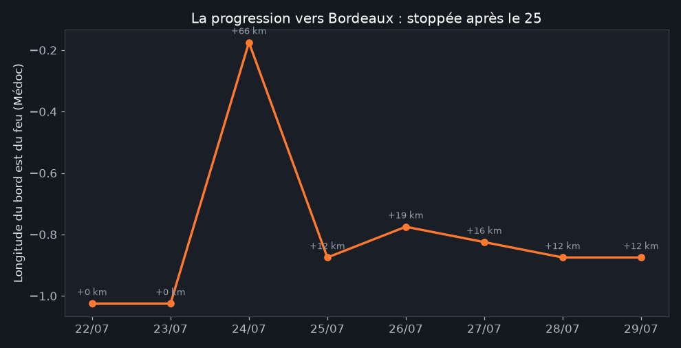
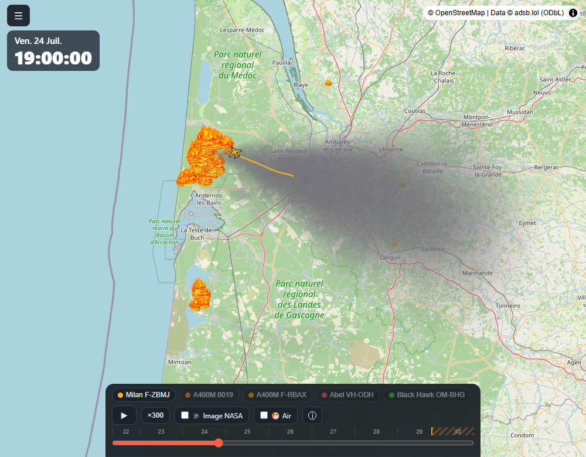
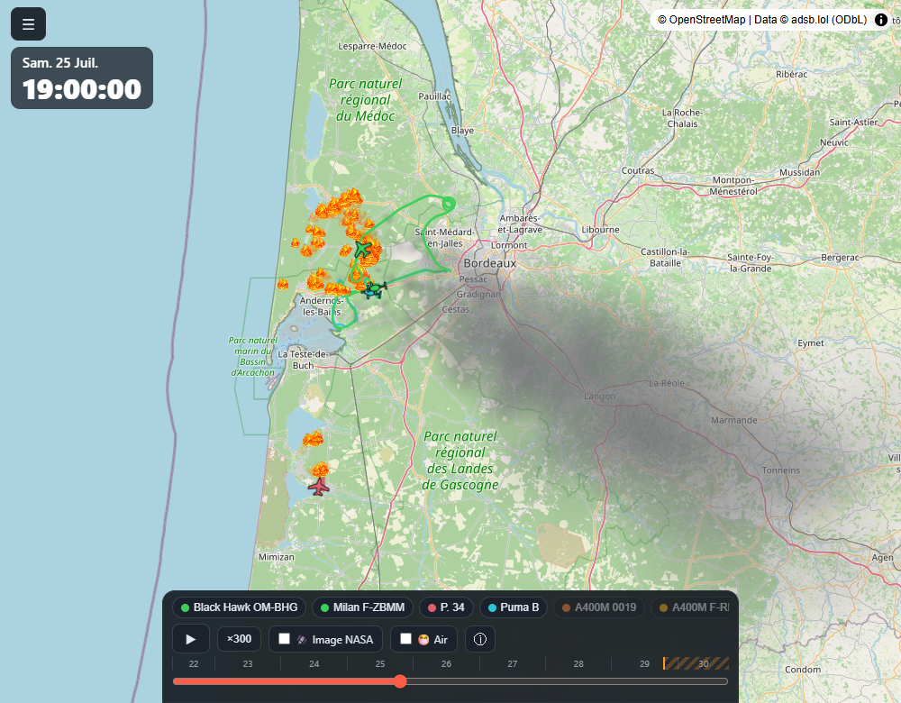

Les largages arrêtent-ils le front ?
Publié le 31 juillet 2026
C'est la question qui fâche : à quoi servent vraiment ces centaines de rotations aériennes ? Nos données permettent de croiser, cellule de 5 km par cellule de 5 km, ce qui a été largué un jour et ce qui brûlait encore le lendemain. La réponse mérite qu'on prenne le temps : car le premier chiffre qu'on obtient dit exactement... le contraire de la vérité.
Le piège statistique (à connaître avant tout)

Lu naïvement, ce graphique dit : "plus on largue, moins le feu s'éteint" (89 % d'extinction sans largage, 42 % avec 50 largages et plus). Faut-il en conclure que les largages aggravent le feu ? Évidemment non. C'est un biais de sélection classique : les pilotes ne larguent pas au hasard. Ils concentrent l'eau sur les fronts actifs, tenaces, dangereux : précisément les endroits qui ont le moins de chances de s'éteindre tout seuls. Les cellules sans largage, elles, sont des braises mourantes que tout le monde a laissées finir. Comparer les deux, c'est comparer des malades en réanimation à des patients qui rentrent chez eux, et s'étonner que la réanimation ait plus de décès.
Ce biais ne peut pas être totalement corrigé avec nos données (il faudrait connaître la dangerosité "attendue" de chaque cellule : vent local, végétation, pente...). Ce que nos chiffres montrent en revanche : à intensité de feu comparable, les cellules très arrosées sont aussi celles qui brûlaient encore le lendemain : autrement dit, les pompiers savent identifier les points durs. Pour juger de l'efficacité, il faut changer d'échelle.
Changer d'échelle : le front, pas la cellule
La bonne question n'est pas "cette cellule s'est-elle éteinte ?" mais "le front a-t-il continué d'avancer ?". Regardons le cas le plus critique : la lisière est du feu du Médoc, celle qui progressait vers la métropole bordelaise.

Le 24 juillet, jour du pic, les largages dessinent un mur bleu continu sur la bordure est du feu, de Sainte-Hélène à Marcheprime : là où quelques kilomètres seulement séparaient les flammes des premières zones urbaines. Le 25, les contours jaunes montrent un feu toujours actif : mais qui n'a pas franchi ce mur.

La courbe résume l'histoire : le feu gagne vers l'est jusqu'au 25 juillet, puis le bord est n'avance plus. C'est le moment exact où le "mur de largages" a été construit : et où, il faut le dire aussi, le vent a faibli et les renforts européens sont arrivés. Les trois ensemble ont tenu la ligne.
La scène, rejouée


Ce qu'on peut conclure : et ce qu'on ne peut pas
Ce que les données soutiennent : les largages ont été massivement concentrés sur la lisière la plus menaçante ; cette lisière a cessé de progresser au moment précis de cet effort ; et aucune zone habitée protégée par ce mur n'a été atteinte.
Ce qu'elles ne prouvent pas : que les largages seuls ont arrêté le front. Le même week-end, le vent tombait, 1 500 militaires et des centaines de pompiers taillaient des pare-feux au sol, et le retardant posé par les Dash travaillait pour eux. Un largage aérien ne gagne jamais seul : il achète du temps aux équipes au sol. Les données montrent un faisceau convergent, pas une cause unique : et toute affirmation plus catégorique, dans un sens ou dans l'autre, dépasserait ce que ces chiffres peuvent dire.
Méthode et limites
Grille de 5 km ; "feu" = puissance radiative satellite (VIIRS + MODIS) sommée par jour ; "largage" = passage d'aéronef sous 300 m à vitesse d'intervention, hors lacs et aéroports. 122 couples cellule-jour étudiés (feu significatif un jour J avec lendemain observé) : échantillon modeste, d'où des pourcentages à lire comme des ordres de grandeur. Le seuil "quasi éteint" est fixé à 15 % de l'intensité de la veille ; le déplacer ne change pas le sens des résultats. Les nuages du 27 au matin ont pu masquer des foyers (voir l'analyse des zones).
Reproduire : scripts/analyse_front.py du
dépôt ·
chiffres bruts. Sources : © adsb.lol contributors (ODbL),
NASA FIRMS. Analyse produite avec l'aide de Claude Code.
- 31/07/2026 : première publication.